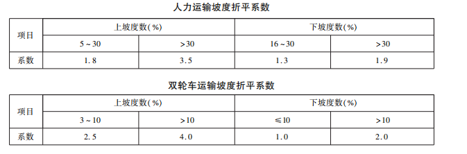

一、《铁路工程基本定额》适用于铁路工程(房屋工程除外)各专业定额编制及铁路工程概(预)算
编制需要。 本册定额包含:模板与辅助结构,钢筋,混凝土,砌筑,机制砂石,材料短途运输,配合比,辅
助结构材料及半成品摊销,材料工地搬运及操作损耗率,其中“钢筋运输”“混凝土拌制”“混凝土运输”
“材料短途运输”内容适用于房屋工程除外的铁路工程概(预)算编制。
二、本册定额是在合理的施工组织和正常的施工条件下编制,所采用的施工方法和工程质量标准
执行现行的国家标准和行业标准。 工程实施阶段的价格应由市场决定。
三、本册定额人工消耗量包括基本用工、辅助用工、工地小搬运用工。 其中,基本用工是指完成定
额单位工程所需的主要用工量;辅助用工是指在施工过程中配合完成定额单位工程所需的用工量;工
地小搬运用工是指完成定额单位工程所需的工地范围内材料及设备运输用工量。 按工厂化施工编制
的定额子目,工地小搬运范围为临时场站内,其余定额子目为 50m 以内,另有说明者除外。
四、本册定额材料消耗量包括净用量和损耗量。 损耗量包括工地搬运及操作损耗,指材料从工地
材料库或堆放点至现场安装(或操作)地点的各种损耗,包括运输、施工及施工现场堆放等损耗。 因施
工工艺要求产生的搭接、施工现场产生的操作损耗详见专业定额。 工地搬运及操作损耗率参见本册定
额第十章,本册定额中除另有说明外均含材料的损耗量。
五、电算代号为“HT-0”的混凝土,其定额子目中未计列“材料费”、“重量”及组成混凝土的用料。
电算代号为“CL-0”的子目未计列“材料费”及“重量”,使用时应根据设计所采用的材料另行计列。
六、本册定额将用量少、低值易耗的零星材料费用列入“其他材料费”,将零星使用和费用很少的施
工机械和仪器仪表费用列入“其他机具使用费”。
七、本册定额中的工作内容,均包括定额子目的全部施工过程。 本册定额中部分子目仅列出主要
施工工序,未列出的次要工序亦包含在工作内容内。
八、本册定额中的“重量”,为各项材料的重量之和,不包括列入其他材料费的材料、水和施工机械
消耗燃料的重量。
九、人工、材料、机具台班单价。
1. 人工单价:执行《铁路基本建设工程设计概(预)算费用定额》TB 10811—2024。
2. 材料单价:执行《铁路工程材料基期价格》TB / T 10813—2024。
3. 机械及仪器仪表台班单价:执行《铁路工程施工机具台班费用定额》TB / T 10814—2024。
十、尺寸表述方式:
1. 未标注尺寸单位的均为 mm。
2. 用“以内”或“以下”表示尺寸的,均包括上限值。
3. 用符号“ ~ ”表示尺寸的,均包括上限值。
一、本章编制了钢模板安装与拆除、塑料模板安装与拆除、木模板制作与安拆、辅助结构制作与
安拆。
二、本章模板制安与拆除定额的单位均为 10m2,指模板与混凝土的接触面积。
三、本章定额第一、二、三节工作内容中不包括模板下支架体系工作内容。
四、大块钢模板类定额子目适用于承台、扩大基础。
五、在引用“木模板制作”定额编制专业定额时,应在 YY-23 基础上根据摊销次数计算摊销量,摊销
次数及摊销量计算公式见第九章,YY-24 直接引用。
六、在引用“木结构制作”定额编制专业定额时,应在 YY-25 基础上根据摊销次数计算摊销量,摊销
次数及摊销量计算公式见第九章,YY-26 直接引用。
一、本章编制了钢筋制作、钢筋运输。
二、本章钢筋制作定额子目按数控设备集中加工编制,定额单位为 t,指制作 1t 成型钢筋。
三、本章钢筋运输定额子目定额单位为 10t。
四、本章定额钢筋制作子目未含钢筋消耗量,引用时应结合工程部位、钢筋种类补充,并计入操作
损耗。 直径大于 10mm 的非套筒连接钢筋,另计 1. 5% 的搭接量。
五、本章“网片”钢筋制作适用于 ϕ10 以下钢筋。
一、本章编制了混凝土拌制、运输。
二、本章定额未包括工地搬运及操作损耗。
三、本章定额单位为 10m3,指构成实体混凝土的体积。
四、本章定额混凝土运输中“隧道内”是指已建成的隧道。
五、混凝土拌制、运输定额子目消耗量中的“水”,指清洗搅拌设备、运输设备及器具用水。
一、本章编制了水泥砂浆拌制、砌体砌筑、勾缝与抹面。
二、本章定额中已包括工地搬运及操作损耗。
三、本章水泥砂浆拌制定额单位为 10m3,指构成实体水泥砂浆的体积。
四、本章砌体体积定额单位为 10m3,指砌筑成型体积。
一、本章编制了联合机组生产砂石料、砂石筛洗。
二、本章联合机组生产砂石料、机制砂定额单位为 100m3,指砂石料成品体积。
三、本章“洗砂”“洗碎石”定额子目应于砂石含污量超过规定值且需清洗时使用。 砂石含污量标
准参见《铁路混凝土结构耐久性设计规范》TB 10005—2010。
一、本章编制了人力运输、双轮车运输、小型运输车运输定额。
二、本章定额适用于工地小搬运范围以外无法使用汽车运输的短途接运。
三、本章人力运输、双轮车运输定额,如在有坡度的施工场地运输,应按照实际斜距乘坡度折平系
数调整折算为水平距离长度。

一、本章编制了泵送混凝土、斗送混凝土、水下混凝土、喷射混凝土、水泥砂浆配合比。
二、泵送混凝土、斗送混凝土、水下混凝土的环境作用等级、设计使用年限、混凝土强度等级设定参
见《铁路混凝土》TB / T 3275—2018 及《铁路混凝土结构耐久性设计》 TB 10005—2010。 水泥砂浆强度
等级设定参见《砌筑砂浆配合比设计规程》JGJ/ T 98—2010。
三、编制条件。
1. 本章定额单位为 1m3,指混凝土、水泥砂浆体积。
2. 本章配合比是按照混凝土机械拌和、机械捣固方式编制。
3. “中砂”含水率为 4%。
四、本章定额中已包括工地搬运及操作损耗。
五、混凝土配合比用料表中粗集料最大粒径指公称粒径。
一、本章编制了钢模板摊销及用量、塑料模板摊销及用量、木料摊销及用量、金属材料摊销、金属构
件及管路摊销、轨道材料摊销。
二、钢模板、木料、其他轨道材料按摊销次数计算材料摊销量,每次摊销量计算应符合下列规定:
每次摊销量 = 一次使用量 ÷ 摊销次数
三、组合钢模板配件及支撑、塑料模板、金属材料按摊销次数和工地搬运及操作损耗率计算材料摊
销量,每次摊销量计算应符合下列规定:
每次摊销量 = 一次使用量 ÷ 摊销次数 + 一次使用量 × 工地搬运及操作损耗率
金属材料的工地搬运及操作损耗率见本册定额第十章。
四、金属构件及管路、钢轨及道岔按安拆一次损耗率和年使用费率计算材料摊销量,每次摊销量计
算应符合下列规定:
摊销量 = 使用总重量 × 安拆一次损耗率 + 使用总重量 × 年使用费率 × 使用年数(按季度计,不足
一季度时按一季度计)